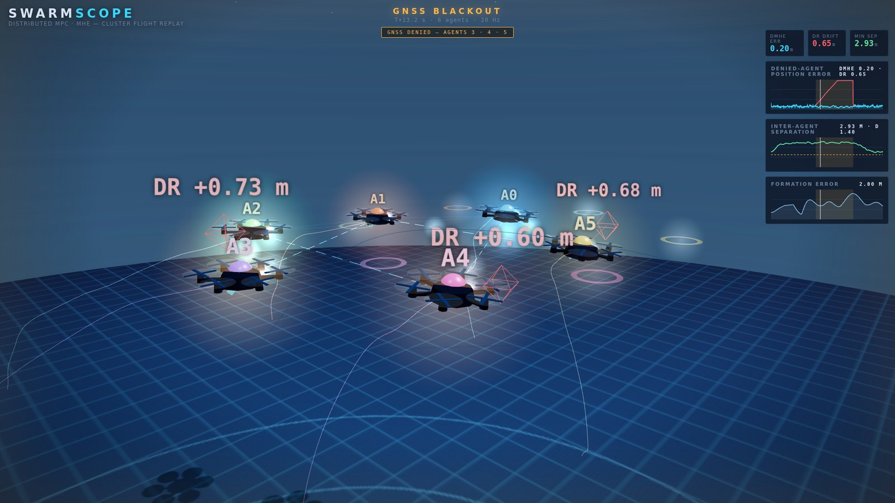
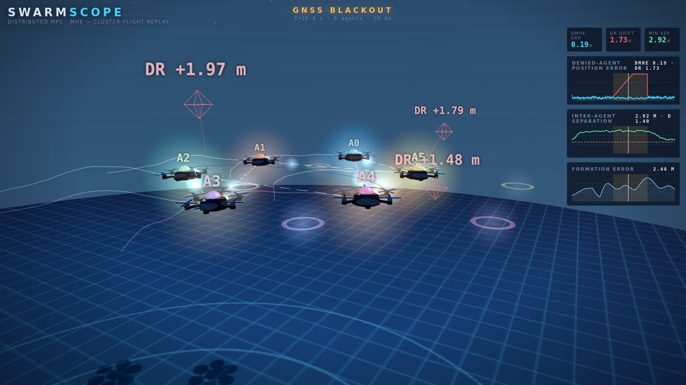

Distributed moving-horizon estimation and model-predictive control for heterogeneous UAV clusters — quaternion hexacopters and 6-DOF fixed-wing aircraft, each agent running its own constrained real-time estimator and controller, coordinating over a communication graph with no central node.

T+13.2 s — GNSS denied, agents 3·4·5. Red wireframes are the dead-reckoning estimate drifting away from the truth; the aircraft themselves stay on station. Click to fly the mission yourself.A formation of drones is only as good as each agent's idea of where it is. Lose GNSS — under a bridge, in a canyon, indoors, jammed — and a dead-reckoning filter drifts within seconds. In a tight formation that drift is not merely an inaccuracy: it is a collision.
This project builds the distributed alternative. Every agent keeps its own moving-horizon estimator and its own predictive controller; agents exchange estimates and relative measurements with their graph neighbours, and nothing is centralised. When an agent loses its absolute fix, it fuses relative measurements to neighbours that still have one, and stays localised to centimetres while the formation keeps flying and keeps its separation.
The mission below is the one the replay shows, and it is the one every figure on this page comes from: six hexacopters take off, assemble a ring, translate as a body, and then contract and rotate the formation — while three of the six are GNSS-denied for ten seconds in the middle of it.
Estimation, control and safety are separate blocks with separate jobs, and the coupling to the rest of the cluster enters at exactly three points.
The numerical core is C, the coordination logic is C++, and the research layer — models, missions, campaigns, figures — is Python. The layers meet at a small allocation-free C interface: set the reference, push constraint rows, prepare, feed back.
That boundary is load-bearing rather than decorative. The coordination layer never sees how a solver is built, so the repository ships a dependency-free reference implementation behind the same interface and the whole stack runs standalone.
Both models are derived in the report from Newton–Euler mechanics with every frame, relation and Jacobian stated explicitly — and both are checked numerically before any control result is claimed.
Attitude is carried as a unit quaternion rather than Euler angles, so the model has no gimbal singularity anywhere in the flight envelope:
Six rotors drive a four-dimensional wrench, so allocation is over-actuated: the
mixer M ∈ ℝ4×6 has rank 4 and a two-dimensional null space,
which is what gives the airframe its single-rotor-failure margin. Thrust and reaction
torque follow the standard kfΩ² / kmΩ²
laws with alternating spin directions.
Control runs as differential flatness into a geometric SO(3) attitude loop, so the predictive layer plans in position while attitude tracking stays on the manifold.
The full rigid-body aerodynamic model: wind triangle, sigmoid-blended stall aerodynamics so lift is valid past the linear region, complete force and moment coefficient expansions, and product-of-inertia rotational dynamics in Γ form.
Straight-and-level trim is solved numerically rather than assumed — at Va = 35 m/s it lands at α = 0.20°, δe = −2.83°, δt = 0.464 — and a cascaded autopilot with look-ahead guidance flies the coordinated-turn echelon loiter.
Four aircraft hold the loiter at 120 m with 35.5 m mean spacing; ten different initial-condition seeds converge to the same limit cycle.
validate_models.py
checks quaternion group properties and the exponential map, mixer rank and allocation
round-trips, hover equilibrium, rigid-body energy consistency, the wind triangle, stall
blending and the computed trim — and prints ALL CHECKS PASSED. Everything
downstream rests on that.The campaign was built to find where distributed estimation breaks. It does not degrade smoothly with how many agents lose GNSS — it falls off a cliff, and the cliff is a property of the communication graph.
A GNSS-denied agent can stay localised only if it can see someone who is not lost. Fusing a relative measurement to a neighbour transfers that neighbour's confidence — weighted by its covariance, so a shaky anchor contributes little — but a ring of agents who have all lost their fix has nothing to transfer between them, and the whole cluster drifts together.
A relative measurement y = pi − pj is only as
good as the neighbour's own position. Fusing it as though p̂j
were truth injects the neighbour's error straight into your estimate; the rule used
here inflates the measurement covariance by the neighbour's reported covariance,
Rrel + Pj, so an anchor that is itself uncertain is
discounted automatically.
Two further rules keep the fusion honest: it triggers only on loss of the absolute fix, so a healthy agent never degrades itself with stale neighbour information, and it runs in two passes per sample, so every agent anchors to same-step estimates rather than to yesterday's.
Each agent runs a constrained moving-horizon estimator over a window of past measurements, with an arrival cost carrying everything older than the window. On the linear translational sub-problem it reduces exactly to an information-form Kalman filter, which is what the reference implementation here uses — a property the report derives rather than assumes.
That reduction is the reason the distributed layer can be studied honestly with the reference core: the coupling, the anchoring policy and the covariance arithmetic are identical whichever core sits underneath.
Single missions prove nothing. The claims below come from a Monte-Carlo campaign over
noise realisations, denial severities, degraded graphs, estimator ablations and solver
substitutions — all reproducible from mc_results.json in the repository.
| Scenario | runs | RMSE mean | median | p95 | shape err | min sep | breaches | div. |
|---|---|---|---|---|---|---|---|---|
| Nominal — 3 of 6 denied | 30 | 0.091 | 0.091 | 0.099 | 0.094 | 1.55 | 0 | 0 |
| 1 of 6 denied | 12 | 0.068 | 0.068 | 0.074 | 0.103 | 1.49 | 0 | 0 |
| 2 of 6 denied | 12 | 0.078 | 0.078 | 0.085 | 0.095 | 1.54 | 0 | 0 |
| 4 of 6 denied | 12 | 0.106 | 0.105 | 0.117 | 0.087 | 1.54 | 0 | 0 |
| 5 of 6 — coverage broken | 12 | 0.451 | 0.365 | 0.689 | 0.218 | 0.90 | yes | 0 |
| 5 of 6 — multi-hop | 12 | 0.119 | 0.120 | 0.127 | 0.068 | 1.49 | 0 | 0 |
| Ring graph — coverage broken | 12 | 0.506 | 0.474 | 0.799 | 0.231 | 0.98 | yes | 0 |
| Ring graph — multi-hop | 12 | 0.111 | 0.112 | 0.119 | 0.098 | 1.49 | 0 | 0 |
| Communication edge dropped | 12 | 0.094 | 0.092 | 0.107 | 0.095 | 1.50 | 0 | 0 |
| Distributed estimator ablated | 12 | 0.089 | 0.087 | 0.099 | 0.420 | 0.75 | yes | 0 |
| Reference core in the loop | 15 | 0.091 | 0.090 | 0.100 | 0.093 | 1.55 | 0 | 0 |
| Compiled estimator + controller | 15 | 0.062 | 0.062 | 0.070 | 0.096 | 1.53 | 0 | 0 |
Errors in metres. “Shape error” is formation geometry error with the cluster centroid removed; “breaches” counts samples below the 1.40 m barrier radius. Divergence and solver-failure counts are zero in every row of the campaign.
The same mission, in 3D, replayed from the logged data — not an animation of it.
Every position, attitude quaternion, estimate and metric in the replay is read straight from the simulation output. Watch the blackout hit at T+12 s, the dead-reckoning ghosts peel away from the aircraft, the fusion beams light up to GNSS-good neighbours, and the formation contract and rotate with the closest-pair separation called out against the barrier radius.

Clone, install NumPy, and every result on this page reproduces on your machine.
# clone and validate the models git clone https://github.com/anilram30/uav-cluster-dmpc-dmhe cd uav-cluster-dmpc-dmhe/python pip install -r requirements.txt python3 validate_models.py # -> ALL CHECKS PASSED python3 sim_hexacluster.py # the reference mission python3 sim_fixedwing.py # echelon loiter python3 make_figures.py # regenerate figures/
# the scenarios behind the results table from sim_hexacluster import run run(denied=(1,2,3,4,5), topology='ring') run(denied=(1,2,3,4,5), topology='ring', multihop=True) run(ctrl_est='ekf') # ablate the estimator run(edge_drop=(0,1)) # degrade the graph